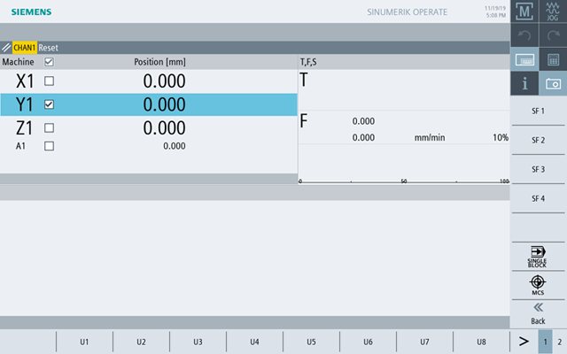

You select keys from the machine control panel which are reproduced by the software by touch operation of the relevant softkeys.
See Section "Controls on the machine control panel" for a description of the individual keys.
| Note |
|
PLC interface signals that are triggered via the softkeys of the machine control panel menus are edge triggered. |
Showing and hiding
The user menu key "U" displays the CPF softkey bar (vertical softkey bar) and the user softkey bar (horizontal softkey bar).
Press the menu forward key to extend the horizontal user softkey bar. This means that additional softkeys are available.
Softkeys on the machine control panel menu
Available softkeys:
SF1- SF4, U1- 8 | Customer keys, can be labeled in the local language |
"WCS MCS" softkey | Switching between WCS and MCS |
"Single Block" softkey | Switch single block execution on/off |
| Note |
The window will automatically disappear when changing regions areas with the <MENU SELECT> key. |
Axis selection
You select an axis in the actual value window by activating the checkbox in the header line of the actual value window.
By tapping the check box, a check box is displayed next to the axis name of the axis that has been enabled for axis selection.
| | Machine manufacturer Please observe the information provided by the machine manufacturer. |
You select an axis by activating the appropriate checkbox.
| Note |
To assign an axis to the handwheel, activate the handwheel via the "Handwheel" operator control element on the touch screen, and then select the axis using the checkbox. |
| Note |
Orientation axes cannot be assigned to the handwheel. |
Then traverse the axes at fixed increments using the operator control elements.